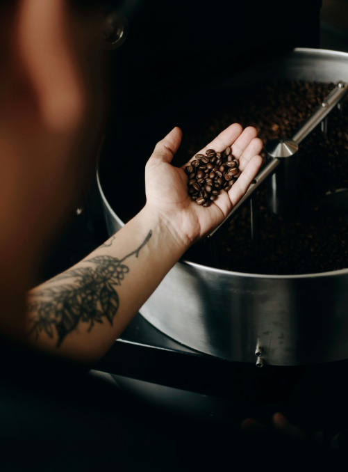
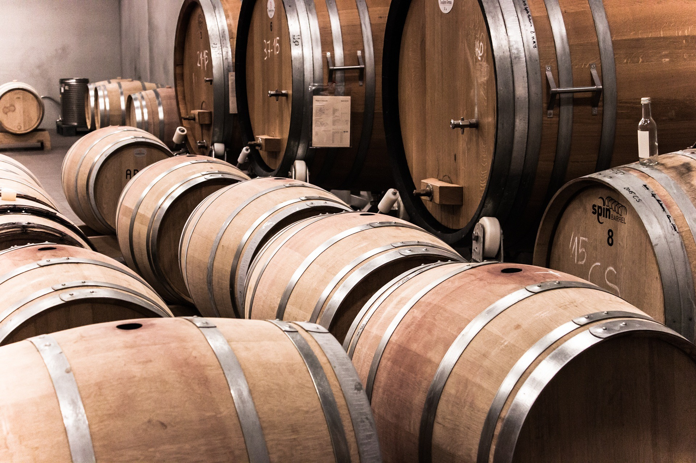
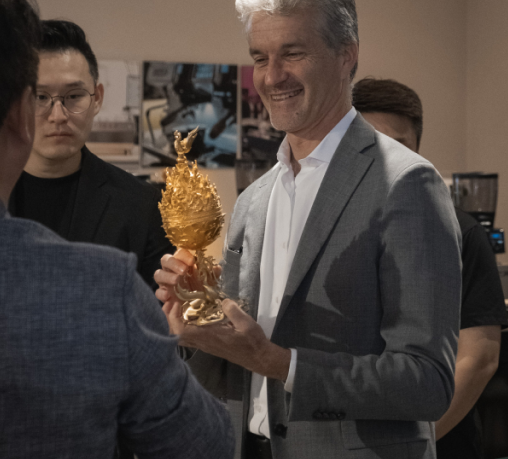
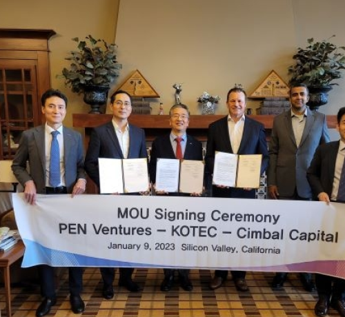
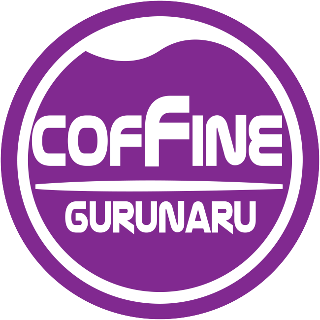

브랜드 소개
- 
-

- 
About
COFFINE GURUNARU
"COFFINE"은 COFFEE + WINE,
"GURUNARU"는 나무 한 그루, 강나루의 쉼터를 상징합니다.
고객 분들 모두 대자연의 그루나루 위에서
향기로운 커피와 건강한 알코올음료 와인을 즐시기기 바랍니다.
- 
- 
토종 커피
브랜드로써의
해외 진출
커핀그루나루는
대한민국 토종 커피브랜드로써
해외 시장에 순차적으로 진출하며,
글로벌 커피 브랜드로의 성장을 위해 끊임없이 도전하고 있습니다.
- MEXICO2023.11 마스터프랜차이즈 계약 및 매장 오픈
- CHINA2023.12 중국 법인 설립
- MALAYSIA2024.04 마스터프랜차이즈 계약 및 매장 오픈 준비 중
MISSION
‘더불어
다음을 준비하는 100년 기업’ 매장 한 곳, 고객 한 분의 목소리까지 귀담아 듣고,
한 발 더 앞서가는 고객감동을 실천하고자 끊임없이 노력하고 있습니다.
앞으로도
현실에 안주하지 않고, 겸손한 마음가짐을 바탕으로 도전적이고 또 창의적인 정신으로 서서히,
그리고 안정적으로 ‘프리미엄 커피 프랜차이즈의 선두 기업’으로 성장하는데 앞장 서겠습니다.
-

BRAND IDENTIFIER
커핀그루나루는 균등과 화합을 뜻하는 둥근 원 안에 가득 차 있는 음료를 형상화했으며, 고객 한 분 한 분에게 ‘항상 차고 넘치는 서비스’를 제공하고, 고객들은 커핀그루나루라는 ‘쉼터’에서 ‘커피와 와인을 편히 즐기라’는 뜻을 담고 있습니다.
-
COLOR
Purple은 자줏빛이라는 사전적 의미 외에 옛날 황제의 권위, 또는 왕위를 상징한다고 표기하고 있습니다. 이러한 보라색은 동서양을 불문하고 고 시대에서부터 현재에 이르기까지 고귀함의 상징으로, 커핀그루나루 또한 고객에게 고급화된 서비스를 제공한다는 의미를 내포하고 있습니다.
Idenfitire는 커핀그루나루를 대표하는 중요한 상징요소로, 심볼마크와 로고타입의 조합을 의미합니다.
커핀그루나루의 시각 아이덴티티 구축은 정확한 Identifier 규정에 따라야 하며, 어떠한 경우에도 훼손, 변형 등의 이미지 손상을 가해서는 안됩니다.